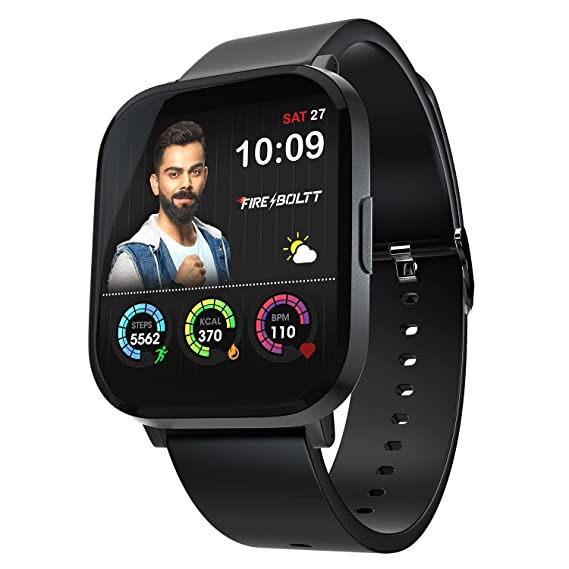
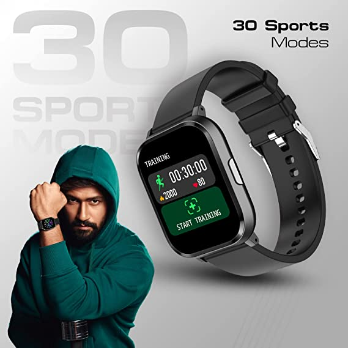
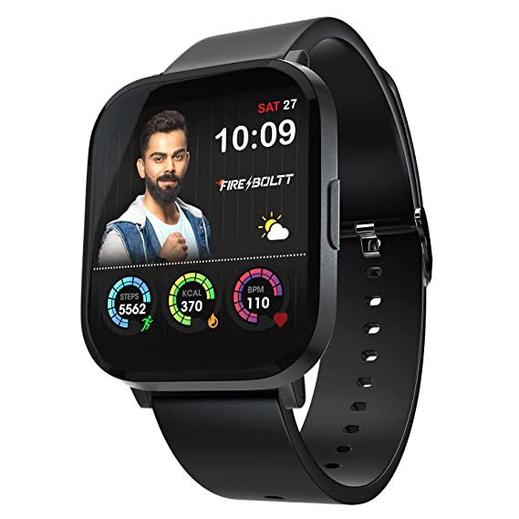
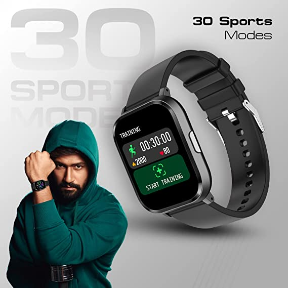

Buy Now
 Pros
Pros
The Garmin Fenix 7X Solar is possibly the ultimate multi-activity tracking device. It comes packed with sensors that include an altimeter, barometer and a compass. Aside from this, it offers a combination of touch screen and button controls. This allows you to use the device even when you wear gloves. The solar charging features help to extend the battery life when outdoors.
Pros
- Solid build
- Accuracy
- Detailed workout information
- Lots of activity tracking options
- Can download workouts
 Cons
Cons
- The charging cable is clunky
- The app can be overwhelming
- Expensive
| SPECIFICATION | ||
|---|---|---|
| Price | : | ₹1,499.00 |
| Brand | : | Fire Boltt |
| Power (Battery) | : | 【Upto 7 Day Battery Life】 - Powerful battery to concentrate on the game without stopping. 【Set Up Alarms】- Set alarms and never be late for that meeting. |
| Compatible OS | : | Android |
| Water Resistant | : | Yes |
| Size | : | 41 |
| Screen Size | : | 33 Millimetres |
| Compatible Devices | : | Tablet, Smartphone |